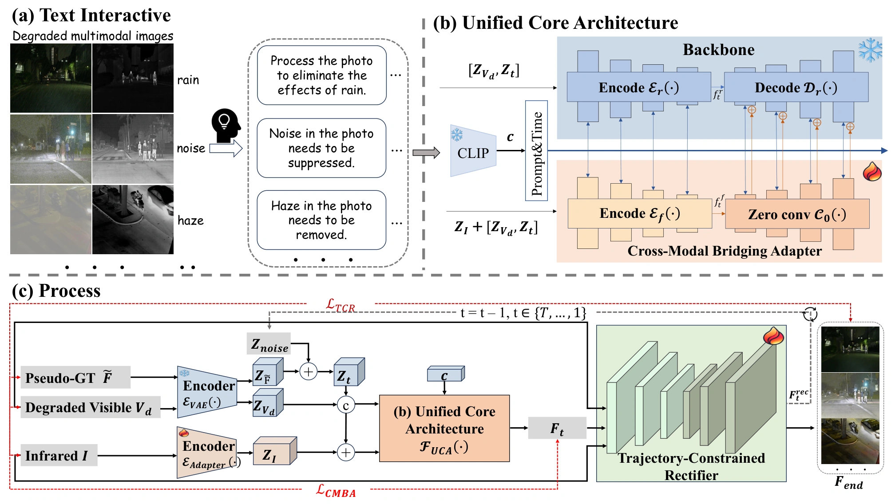
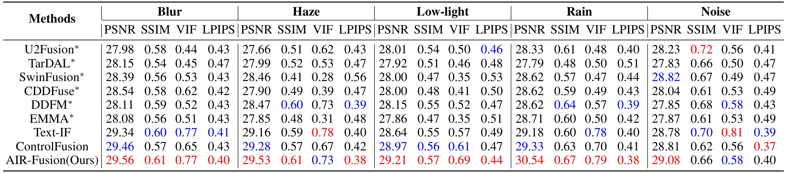
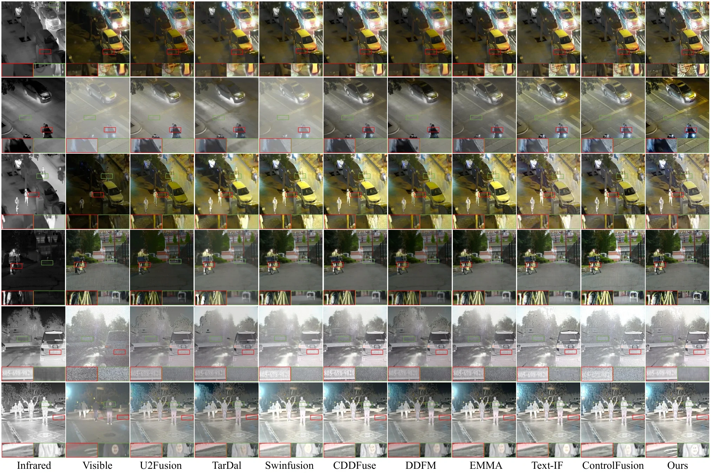
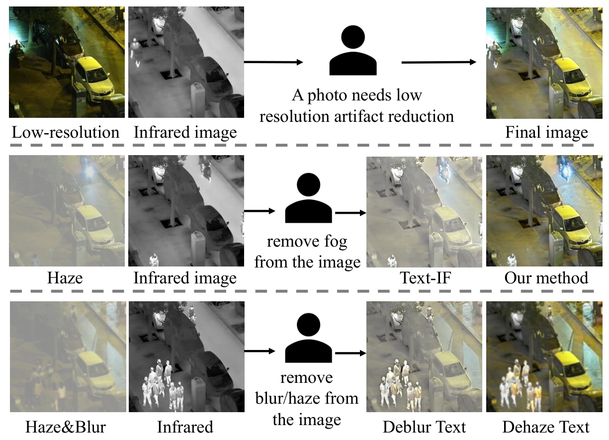

Preserve the backbone
Retain pretrained restoration priors instead of fully fine-tuning the diffusion backbone on limited fusion data.
† First student author. Author order follows the published paper.
Restore degraded images and combine infrared and visible information, guided by text and the restoration priors of a frozen diffusion model.
Paper and project materials available. Implementation and model weights have not yet been released.
A restoration model knows how to remove degradations, but does not natively combine infrared and visible inputs. AIR-Fusion keeps the AutoDIR restoration backbone frozen, learns multimodal conditioning, and constrains sampling with the source images.
Retain pretrained restoration priors instead of fully fine-tuning the diffusion backbone on limited fusion data.
The Cross-Modal Bridging Adapter injects infrared-conditioned features into the frozen denoising network under text guidance.
The Trajectory-Constrained Rectifier uses source images to rectify intermediate predictions and re-encodes them into the sampling loop.

Trained only on LLVIP and evaluated on LLVIP plus unseen MSRS and RoadScene data. The table below reproduces the PSNR columns for every method in Table 1; higher is better.
| Method | BlurLLVIP | HazeLLVIP | Low lightLLVIP | RainMSRS | NoiseRoadScene |
|---|---|---|---|---|---|
| U2Fusion* | 27.98 | 27.66 | 28.01 | 28.33 | 28.23 |
| TarDAL* | 28.15 | 27.99 | 27.92 | 27.79 | 27.83 |
| SwinFusion* | 28.39 | 28.46 | 28.00 | 28.62 | 28.82 |
| CDDFuse* | 28.54 | 27.90 | 28.00 | 28.62 | 28.04 |
| DDFM* | 28.11 | 28.47 | 28.15 | 28.62 | 27.85 |
| EMMA* | 28.08 | 27.85 | 27.86 | 28.71 | 27.87 |
| Text-IF | 29.34 | 29.16 | 28.64 | 29.18 | 28.78 |
| ControlFusion | 29.46 | 29.28 | 28.97 | 29.33 | 28.81 |
| AIR-Fusion | 29.56 | 29.53 | 29.21 | 30.54 | 29.08 |
* AutoDIR restoration is applied before fusion for these baselines. Interactive methods use degradation-matched prompts. These are reported paper results, not new runs.
AIR-Fusion has the highest PSNR in all five listed settings. This is not a claim of leading every metric: haze VIF and noise SSIM, VIF and LPIPS favor other methods. See the full table for the trade-offs.


In the paper's compound haze-and-blur example, a dehazing instruction lifts the haze while largely retaining blur. A deblurring instruction sharpens structure while leaving much of the haze.
Figure 6 also illustrates low-resolution recovery and a natural-language dehazing prompt. These are qualitative examples, not a comprehensive instruction-following benchmark.

In Table 2, adding TCR raises VIF from 0.87 to 1.04 and QAB/F from 0.57 to 0.76 compared with the No TCR variant. PSNR rises from 29.01 to 29.99. The full model does not maximize every ablation metric: removing color loss yields a higher PSNR.
Evaluation mainly targets degraded visible inputs. Degraded infrared inputs, degradation in both modalities, and misregistration remain future work. Real-world haze and detection examples are qualitative.
The paper reports 11.397 seconds at 100 denoising steps on an RTX A6000, with 0.361B trainable parameters. This is not real-time inference.
Published in the Proceedings of the Thirty-Fifth International Joint Conference on Artificial Intelligence (IJCAI 2026), pp. 935–943.
@inproceedings{ijcai2026p105,
title = {Interactive All-in-One Image Restoration and Fusion},
author = {Cao, Bing and Zhang, Qiang and Xu, Xingxin and Zhu, Pengfei},
booktitle = {Proceedings of the Thirty-Fifth International Joint
Conference on Artificial Intelligence, {IJCAI-26}},
publisher = {International Joint Conferences on Artificial Intelligence Organization},
editor = {Diego Calvanese},
pages = {935--943},
year = {2026},
month = {8},
note = {Main Track},
doi = {10.24963/ijcai.2026/105},
url = {https://doi.org/10.24963/ijcai.2026/105}
}{kind=link}